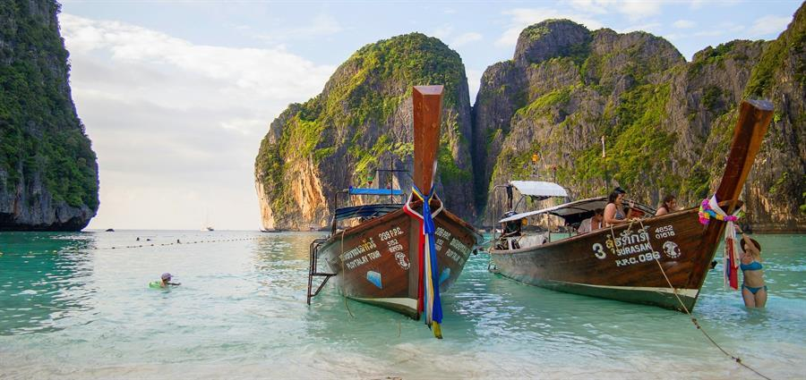

The Authentic Indian Travel Blog
Planning a vacation in India? Read the true Indian travel blogs from the real travelers who have experienced the tourist destinations in the country. Follow us to learn more about the first-hand experience of vacation stay at various destinations in India. Do you like to share your vacation experience? Be a guest blogger with us and share your experience about any destinations in India. We do accept travel stories from those who are interested in exploring places and like to share the experience with the world.
Are you planning to visit Sabarimala in Kerala? Check out the taxi rates from Aluva railway station, Kochi airport and Ernakulam to Pamba and Nilakkal, which are the nearest stations to Sabarimala.
Are you visiting Udaipur in Rajasthan? Plan a one day trip to Chittorgarh Fort, when deciding on an itinerary. The Chittorgarh Fort is the biggest fort in India, with magnificent architecture and vibrant and exciting history, of valiant kings, battles and sieges, and tales of romance and Jauhar.
Thinking about a place to visit in South India to relax and make your vacation memorable? Here is my travel experience to Kodaikanal. Check this out to learn more about how to make your holidays in Kodaikanal more joyful.
From brilliant photographers to solo travellers, these travel bloggers are a true inspiration to the people who love to travel and explore. Check our list of top travel bloggers in India to know more about them.
Share your Indian travel blogs and earn revenue: You are welcome to write your travelogues and earn revenue from us. We share a part of our revenue with the content contributors. If you write any travel stories here, you will receive 100% of the AdSense ad revenue from your blog posts.
Are you a travel blogger from India and like to partner with us? Let's join hands and work together for mutual benefits. There are several ways we can collaborate including exchanging travel information to areas you focus on, exchange articles etc. If you have a proposal, let's know and we will make it happen.